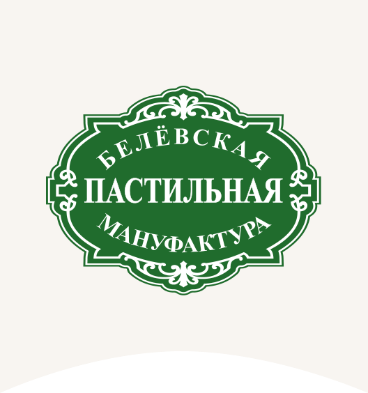

С чего начнём?
Весь ассортиментЯблочная
классика.
Яблоко в главной роли.
С неё начинается знакомство с пастилой.
Выберите вкус или листайте фото

Выбрать пастилуЯблоко в главной роли.
С неё начинается знакомство с пастилой.
Выберите вкус или листайте фото